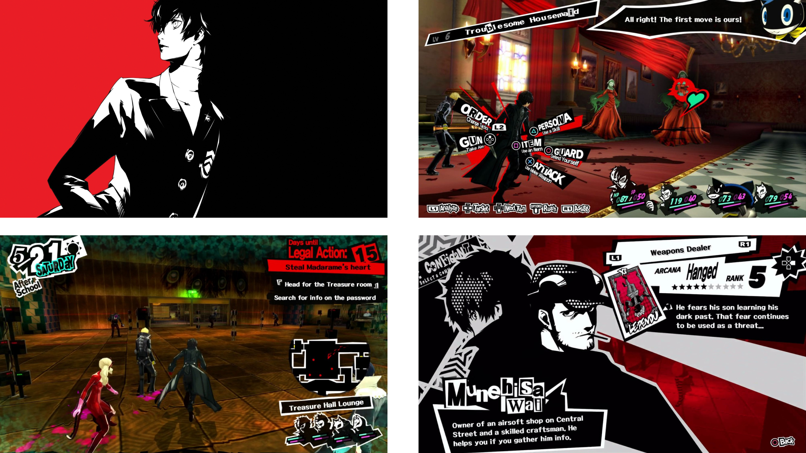

Translating a video game’s Wikipedia page into a cohesive print
format.
For the final project of my Typography Studio 1 class, we were
tasked with turning a Wikipedia page of at least 20,000 words,
along with a related interview, into a book format. My chosen page
was on the video game Persona 5, one of my favorite video
games and well-known for its stylish and graphic visuals, and I
aimed to bring aspects of its design aesthetic and thematic
concepts into the book.
guiding questions
Persona 5’s visual style consists of many bold,
high-contrast graphics and typography, with both symbols, in-game
UI, and text in an off-kilter, almost inconsistent style; the main
color palette consists of black, white, and bright red, with black
used as a shadow in conjunction with various textures and
patterns. Thematically, the game centers on freedom and breaking
free from the limitations of modern society, with the character
designs based on famous historical outlaws and rebels. In order to
effectively capture and convey the game’s style and themes, I
created guiding questions to follow and refer back to in each
iteration:
How might Persona 5’s visual style and thematic concepts
be incorporated into a book’s design?
How can Persona 5’s origins as a Japanese
role-playing-game be considered in the design?
How can Wikipedia’s single page format be translated as a book?

final book design
In the final design, the overall system takes many inspirations
from the original game. The cover is designed from a highlight
in-game illustration of the protagonist, with the title of the
game in English on the front cover and the title in Japanese on
the back cover, a nod to how Japanese books are formatted from
right to left. The main color palette follows that of the game,
and for spreads like the table of contents and section dividers,
the typography and page layout draws inspiration from the game’s
UI elements.